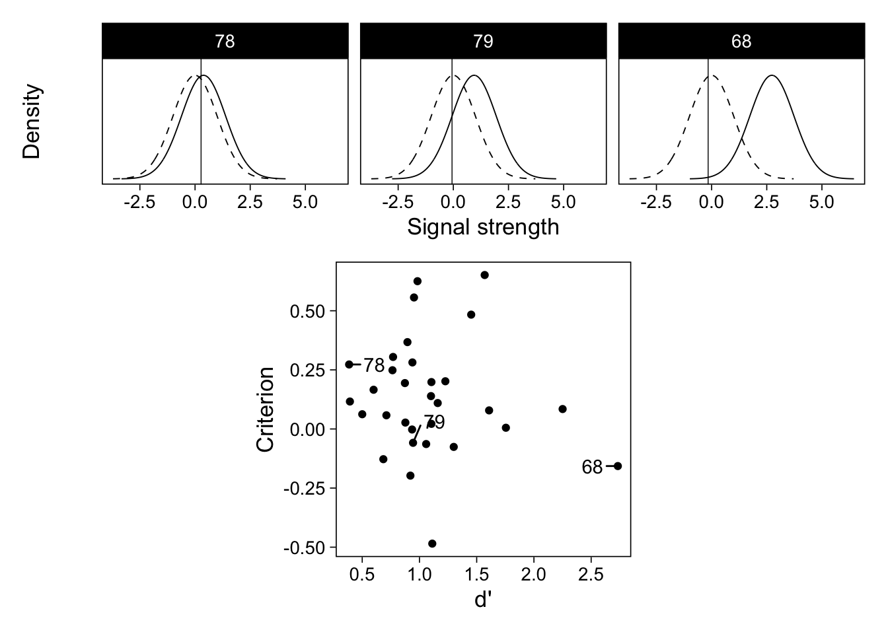
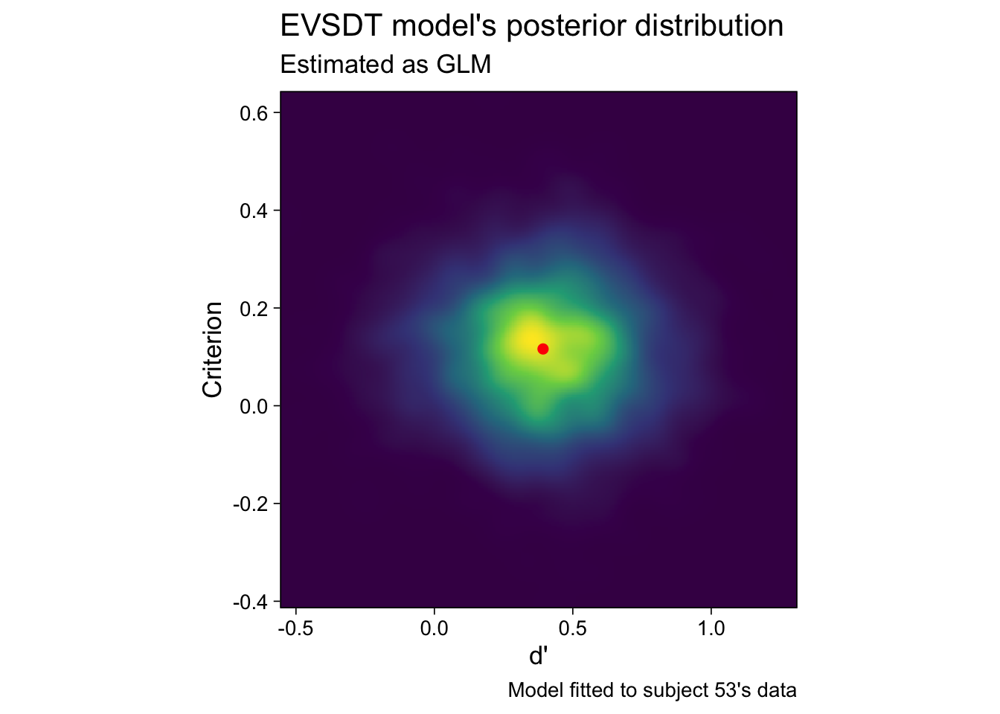
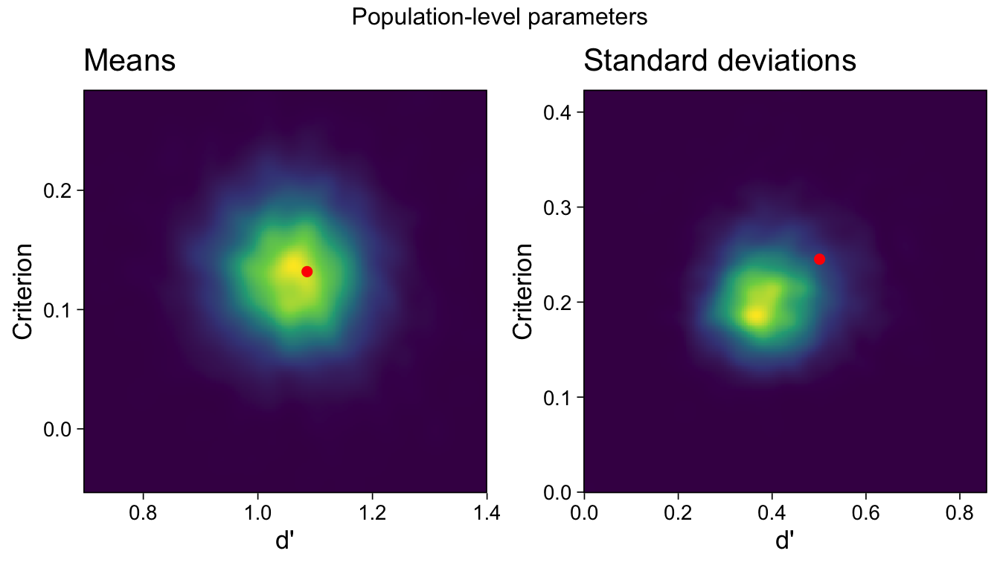
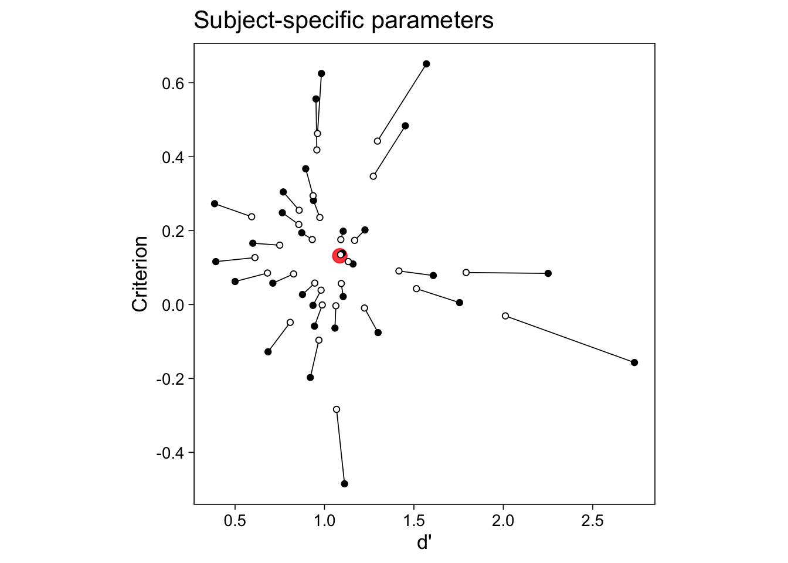
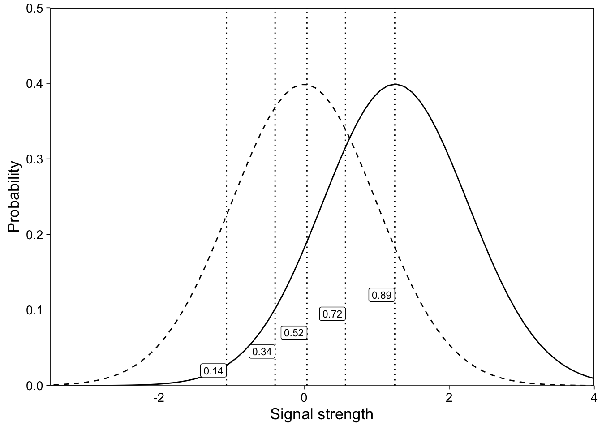
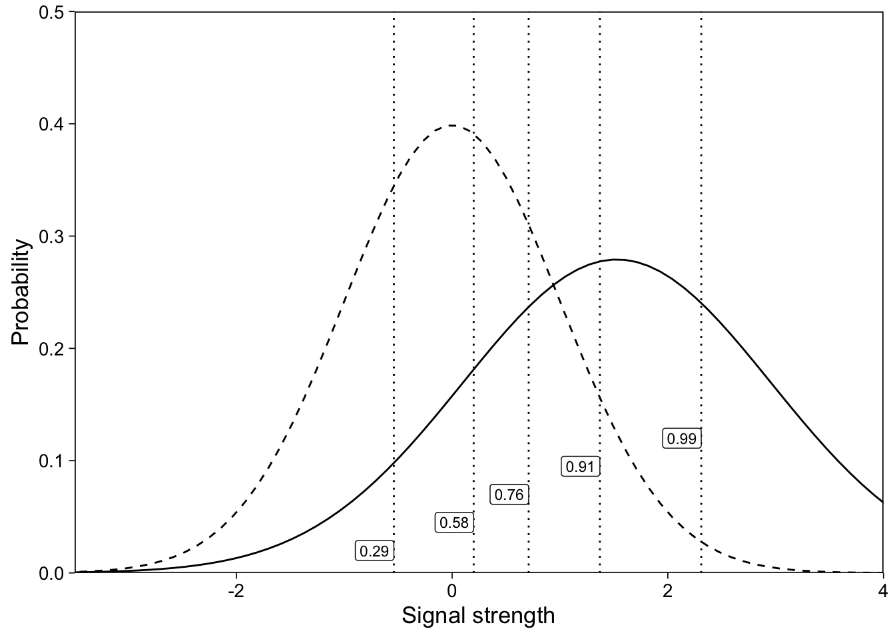
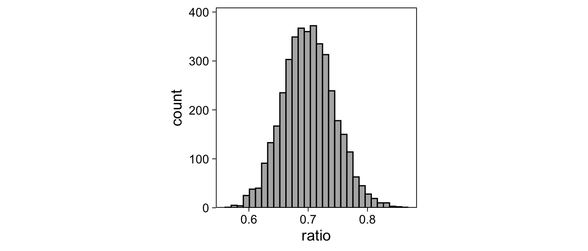
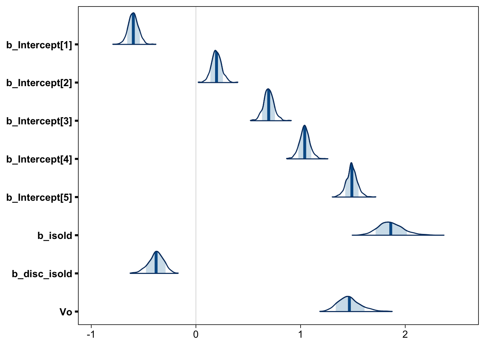
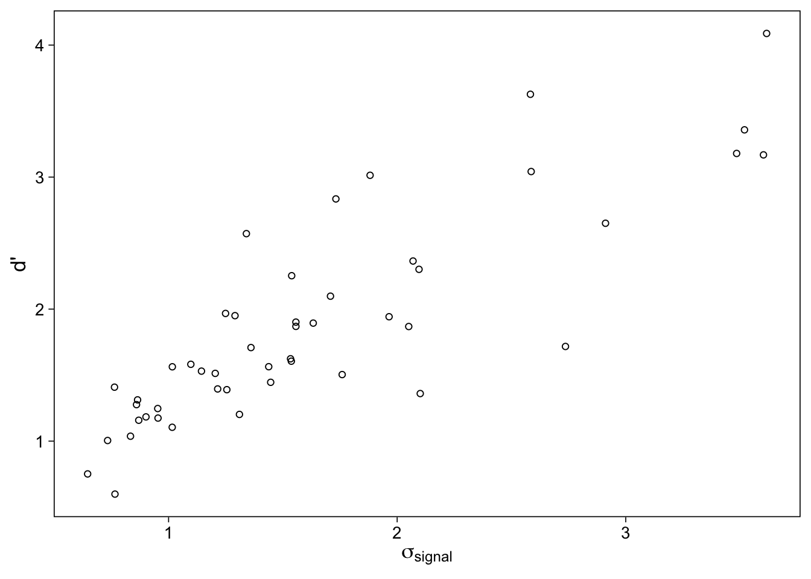

library(knitr)library(tinytable)library(bayesplot)library(here)library(scales)library(ggdist)library(distributional)library(patchwork)library(rstan)library(brms)library(tidyverse)# Some settings common to all modulessource(here("modules/_common.R"))
Signal Detection Theory
Signal Detection Theory (SDT) is a common modeling framework for memory and perception. Calculating point estimates of equal variance Gaussian SDT parameters is easy using widely known formulas. More complex SDT models, such as the unequal variance SDT model, require more complicated modeling techniques. These models can be estimated using Bayesian (nonlinear and/or hierarchical) regression methods, which are sometimes difficult to implement in practice. In this tutorial, I describe how to estimate equal and unequal variance Gaussian SDT models as Generalized Linear Models for single participants, and for multiple participants simultaneously using hierarchical Bayesian models (sometimes called Generalized Linear Mixed Models).
To get started, consider a recognition memory experiment where participants are shown a series of images, some of which are new (participant has not seen before) and some of which are old (participant has seen before). Participants answer, for each item, whether they think they have seen the item before (“old!” response) or not (“new!” response). SDT models participants’ sensitivity—how well they can distinguish new and old images—and response criterion—their tendency, or bias, to respond “old!”—separately, and can therefore be enormously useful in modeling the participants’ cognitive processes. This logic applies to e.g. perception, where SDT was initially introduced in.
The conceptual basis of SDT (keeping with a memory task / metaphor) is that on each trial participants experience some inner “familiarity” (or memory strength) with the stimulus, which is hidden from the experimenter, or latent. The participants then decide, based on this familiarity signal and how far it exceeds their threshold for deciding that they’ve seen a stimulus, whether they have encountered the current stimulus previously (“old!”) or not (“new!”). I assume that readers are at least somewhat familiar with the basics of SDT, and will not discuss the underlying theory further. Classic introductions to SDT are Macmillan and Creelman (2005) and Green and Swets (1966).
Equal Variance SDT Model
We first consider the common SDT model that assumes the participants’ familiarity distributions are two Gaussians with equal variances but possibly different means (i.e. previously seen items elicit a stronger familiarity signal, on average). This model is known as the EVSDT (equal variance SDT) model.
We estimate the model’s parameters for a single participant using three methods: “Manual” calculation of the point estimates using easy formulas translated to R code; estimating the model using a Bayesian Generalized Linear Model; and estimating the model using a Bayesian nonlinear model.
Example data
To illustrate the EVSDT, we will use an example data frame from the sdtalt package (Wright 2011): “These are the data from the control group in Skagerberg and Wright’s study of memory conformity. Basically, this is the simplest old/new recognition memory design.” (Skagerberg and Wright 2008). We show six rows of these data in Table 1.
Table 1: Six rows of example recognition memory data
Calculate point estimates
We begin by calculating the point estimates of the EVSDT parameters, separately for each participant in the data set. Before doing so, I note that this data processing is only required for manual calculation of the point estimates; the modeling methods described below take the raw data and therefore don’t require this step.
First, we’ll compute for each trial whether the participant’s response was a hit, false alarm (fa), correct rejection (cr), or a miss. We’ll do this by creating a new variable, type:
For a single subject, d’ can be calculated as the difference of the standardized hit and false alarm rates (Stanislaw and Todorov 1999):
\[
d' = \Phi^{-1}(HR) - \Phi^{-1}(FAR)
\tag{1}\]
\(\Phi\) is the normal cumulative distribution function, and is used to convert z scores into probabilities. \(\Phi^{-1}\), the normal quantile function, converts a proportion (such as a hit rate or false alarm rate) into a z score. From here on, I refer to standardized hit and false alarm rates as zHR and zFAR, respectively. Response criterion c is calculated1 as:
\[
c = -\frac{\Phi^{-1}(HR) + \Phi^{-1}(FAR)}{2}
\tag{2}\]
We can use R’s proportion to z-score function (\(\Phi^{-1}\)), qnorm(), to calculate each participant’s d’ and c from the counts of hits, false alarms, misses and correct rejections.
The sdt data frame (Table 2) now has point estimates of every participant’s d’ and c, and the quantities that went into calculating them. I show all parameters, and three participants’ implied EVSDT model in Figure 1.

Figure 1: Top. The equal variance Gaussian signal detection model for three participants, based on manual calculation of the parameter’s point estimates. The two distributions are the noise distribution (dashed) and the signal distribution (solid); the vertical line represents the response criterion c. d’ is the distance between the peaks of the two distributions. Bottom. Scatterplot of all participants’ criteria and d’.
Estimate parameters
Generalized Linear Models (GLM) are a powerful class of regression models that allow modeling binary outcomes, such as our “old!” / “new!” responses. In dat, each row (trial) can have one of two responses, “old!” (sayold = 1) or “new!” (sayold = 0). We use GLM to regress these responses on the stimulus type: On each trial, the to-be-judged stimulus can be either new (isold = 0) or old (isold = 1).
We assume that the outcomes are Bernoulli distributed (binomial with 1 trial), with probability \(p_i\) that \(y_i = 1\).
\[
y_i \sim Bernoulli(p_i)
\]
Because probabilities have upper and lower bounds at 1 and 0, we map p to a “linear predictor” \(\eta\) with a link function, and model \(\eta\) with an additive combination of predictors. If this link function is probit, we have a “probit model”2:
\[
p_i = \Phi(\eta_i)
\]
\(\Phi\) is again the normal distribution function and maps z scores to probabilities. We then model \(\eta\) on an intercept and a slope:
\[
\eta_i = \beta_0 + \beta_1\mbox{isold}_i
\]
Given this parameterization, the intercept of the model (\(\beta_0\)) will indicate the (probit of) the probability of responding “old!”, when all predictors are zero. When isold, our predictor, is “sum-to-zero” coded as (e.g.) -0.5 and 0.5 for new and old items respectively, the intercept corresponds to -c (see Equation 2). We therefore ensure that isold is appropriately coded
Code
dat$isold <-factor( dat$isold, levels =0:1, labels =c("new", "old"))contrasts(dat$isold) <-c(-0.5, 0.5)contrasts(dat$isold)#> [,1]#> new -0.5#> old 0.5
The slope of the model (\(\beta_1\)) is the difference in z-scored probabilities of saying “old!” between old and new items. Specifically, since new items are coded as -0.5 and old items as 0.5, \(d' = \beta_1\) (see Equation 1).
The connection between SDT models and GLM is discussed in detail by DeCarlo (1998). Two immediate benefits of thinking about SDT models in a GLM framework is that we can now easily include predictors on c and d’, and estimate SDT models with varying coefficients using hierarchical modeling methods (DeCarlo 2010; Rouder and Lu 2005). This latter point means that we can easily fit the models for multiple participants (and items!) simultaneously, while at the same time pooling information across participants (and items). We will return to this point below.
Because we wrote the SDT model as a GLM, we have a variety of software options for estimating the model. For this simple model, you could just use base R’s glm(). Here, we use the Bayesian regression modeling R package brms (Bürkner 2017; Stan Development Team 2016a), because its model formula syntax extends seamlessly to more complicated models that we will discuss later. We can estimate the GLM with brms’s brm() function, by providing as arguments a model formula in brms syntax (identical to base R model syntax for simple models), an outcome distribution with a link function, and a data frame.
brms’s model syntax uses variable names from the data. We regress the binary sayold responses on the binary isold predictor with the following formula: sayold ~ isold. The distribution of the outcomes is specified with family argument. To specify the bernoulli distribution with a probit link function, we use family = bernoulli(link="probit"). We will only model the first participant’s data (number 53), and therefore specify the data with data = filter(dat, subno==53).
The brm() function also allows specifying prior distributions on the parameters, but for this introductory discussion we omit discussion of priors. Finally, we specify file, to save the model to a file so that we don’t have to re-estimate the model whenever we restart R.
Putting these pieces together, we estimate the SDT model as a probit GLM, using data stored in dat, for subject 53 only, with the following function:
The estimated model is saved in evsdt_1, whose summary() method returns a numerical summary of the estimated parameters along with some information and diagnostics about the model:
Code
summary(evsdt_1)#> Family: bernoulli #> Links: mu = probit #> Formula: sayold ~ isold #> Data: filter(confcontr, subno == 53) (Number of observations: 100) #> Draws: 4 chains, each with iter = 2000; warmup = 1000; thin = 1;#> total post-warmup draws = 4000#> #> Regression Coefficients:#> Estimate Est.Error l-95% CI u-95% CI Rhat Bulk_ESS Tail_ESS#> Intercept -0.11 0.13 -0.36 0.12 1.00 3650 2786#> isold1 0.40 0.26 -0.14 0.90 1.00 3706 2265#> #> Draws were sampled using sampling(NUTS). For each parameter, Bulk_ESS#> and Tail_ESS are effective sample size measures, and Rhat is the potential#> scale reduction factor on split chains (at convergence, Rhat = 1).
The regression parameters (Intercept (\(c = -\beta_0\)) and isold (\(d' = \beta_1\))) are described in the “Regression Coefficients” table in the above output. Estimate reports the posterior means, which are comparable to maximum likelihood point estimates, and Est.Error reports the posterior standard deviations, which are comparable to standard errors. The next two columns report the parameter’s 95% Credible Intervals (CIs). The estimated parameters’ means match the point estimates we calculated by hand (see table above.)
In fact, the posterior modes will exactly correspond to the maximum likelihood estimates, if we use uniform priors. The posterior density of d’ and c, for participant 53, is illustrated in Figure 2: The maximum likelihood estimate is spot on the highest peak of the posterior density.

Figure 2: The (approximate) joint posterior density of subject 53’s SDT parameters. Lighter yellow colors indicate higher posterior density. The red dot indicates the ‘manually’ calculated MLE point estimate of d’.
Figure 2 raises some interesting questions: What happens if we ignore the uncertainty in the estimated parameters (the colorful cloud of decreasing plausibility around the peak)? The answer is that not much happens for inference about averages by ignoring the subject-specific parameters’ uncertainty, if the design is balanced across participants. But what will happen if we use the point estimates as predictors in some other regression, while ignoring their uncertainty? What are the implications of having very uncertain estimates? Should we trust the mode?
In any case, I hope the above has illustrated that the equal variance Gaussian SDT parameters are easy to obtain within the GLM framework. Next, we describe how to estimate the SDT model using brms’ nonlinear modeling syntax.
Estimate parameters with a nonlinear model
Here, we write the EVSDT model in a similar way as the GLM above, but simply flip the criterion and d’. To do that we need to use brms’ nonlinear modelling syntax. This parameterization will give c directly, without the need to flip the estimated parameter value. Although conceptually similar to above, and not necessarily useful by itself, it might be useful to fit this small variation of the above GLM to get familiar with brms’ nonlinear modeling syntax. We write the model as follows (DeCarlo 1998):
\[
p_i = \Phi(d'\mbox{isold}_i - c)
\]
This model gives us direct estimates of c and d’. Writing and estimating nonlinear models can be considerably more involved than fitting GLMs. Accordingly, the code below is a bit more complicated. The key point here is, however, that using brms, we can estimate models that may be nonlinear without deviating too far from the basic formula syntax.
First, we’ll specify the model using the bf() function:
Let’s walk through this code line by line. On the first line, we specify the model of sayold responses. Recall that we are modeling the responses as Bernoulli distributed (this will be specified as an argument to the estimation function, below). Therefore, the right-hand side of the first line (after ~) is a model of the probability parameter (\(p_i\)) of the Bernoulli distribution.
The two unknown parameters in the model, d’ and c, are estimated from data, as indicated by the second line (i.e. dprime ~ 1). The third line is required to tell brms that the model is nonlinear. To further understand how to write models with brms’ nonlinear modeling syntax, see (vignette("brms_nonlinear", package = "brms")) (or here).
Because the parameters of nonlinear models can be more difficult to estimate, brms requires the user to set priors when nl = TRUE. We set somewhat arbitrary priors on dprime and c (the scale parameter is standard deviation, not variance):
After specifying the model and priors, fitting the model is done again using brm() with only a few adjustments: because we specified the link function inside bf() (the Phi() function), we should explicitly set link="identity" in the family argument. Because nonlinear models are trickier to estimate, we also adjust the underlying Stan sampler’s adapt_delta parameter (this will make the MCMC a little slower but will return less noisy results).
Notice that we now entered m2 as the first argument, whereas with the first model, we simply wrote the formula inside the brm() function. These two ways are equivalent, but because this model is more complicated, I saved it into a variable as a separate line of code. We then compare the two models’ estimated parameters in Table 3. Recall that the latter model directly reports the standardized false alarm rate (c).
Table 3: Parameter estimates from EVSDT models fitted to subject number 53.
The results are very similar, but note that priors were included only in the nonlinear syntax model. The only real difference is that the MCMC algorithm explored evsdt_2’s posterior less efficiently, as shown by the smaller effective sample sizes (..._ESS) for both parameters. This means that the random draws from the posterior distribution, for evsdt_2, have greater autocorrelation, and therefore we should possibly draw more samples for more accurate inference. The posterior distributions obtained with the 2 methods are shown in Figure 3.
Figure 3: Top row: The joint posterior density of subject 53’s SDT parameters, estimated with the GLM and the nonlinear model. Lighter yellow colors indicate higher posterior density. The red dot indicates the sample mean d’ that was calculated ‘manually’. Bottom row: The marginal posterior densities of c and dprime from GLM (red) and nonlinear (blue) models.
There is little benefit in using the second, “nonlinear” parameterization of EVSDT in this case. However, it is useful to study this simpler case to make it easier to understand how to fit more complicated nonlinear models with brms.
Estimate parameters with aggregated data
It is sometimes useful, especially with very large data, to aggregate data to counts for each combination of all categorical predictors. For example, to aggregate the current data
Code
dat#> # A tibble: 3,100 × 3#> subno sayold isold#> <dbl> <dbl> <fct>#> 1 53 0 new #> 2 53 0 new #> 3 53 0 new #> 4 53 0 new #> 5 53 0 new #> 6 53 0 new #> 7 53 0 new #> 8 53 0 new #> 9 53 0 new #> 10 53 0 new #> # ℹ 3,090 more rows
Interim discussion
Fitting one subject’s EVSDT model with different methods
We have now estimated the equal variance Gaussian SDT model’s parameters for one subject’s data using three methods: Calculating point estimates manually, with a probit GLM, and with a probit model using brms’ nonlinear modeling syntax. The main difference between these methods, so far, is that the modeling methods provide estimates of uncertainty in the parameters, whereas the manual calculation does not. This point leads us directly to hierarchical models (Rouder and Lu 2005; Rouder et al. 2007), which we discuss next.
However, there are other, perhaps more subtle, benefits of using a regression model framework for estimating SDT models. There is something to be said, for example, about the fact that the models take the raw data as input. ‘Manual’ calculation involves, well, manual computation of values, which may be more error prone than using raw data. This is especially clear if the modeling methods are straightforward to apply: I hope to have illustrated that with R and brms (Bürkner 2017), Bayesian modeling methods are easy to apply and accessible to a wide audience.
Moving to a modeling framework will also allow us to include multiple sources of variation, such as heterogeneity across items and participants, through crossed “random” effects (Rouder et al. 2007), and covariates that we think might affect the SDT parameters. By changing the link function, we can also easily use other distributions, such as logistic, to represent the signal and noise distributions (DeCarlo 1998, 2010).
Prior distribution
Finally, priors. Newcomers to the Bayesian modeling framework might object to the use of prior distributions, and think that they are unduly biasing the results. However, moderately informative priors usually have far less of an influence on inference than newcomers might assume. Above, we specified the GLM with practically no prior information; if you are reluctant to include existing knowledge into your model, feel free to leave it out. Things are, unfortunately, a little more complicated with the nonlinear modeling functions: The posterior geometry might be funky (technical term), in which case the priors could mainly serve to nudge the posterior samples to be drawn from sensible parameter values.
Further, priors can be especially useful in estimating SDT models: If participants’ hit or false alarm rates are 0 or 1–a fairly common scenario–mild prior information can be used in a principled manner to release the estimated quantities from the hostile captivity of the boundary values. Prior literature has discussed various corrections to 0 and 1 rates (Stanislaw and Todorov 1999). However, Bayesian priors can take care of these edge cases in a more principled manner.
EVSDT for multiple participants
Above, we obtained parameter estimates of the EVSDT model for a single subject using three methods: Manual calculation of point estimates (Stanislaw and Todorov 1999), estimating the model as a GLM (Generalized Linear Model; DeCarlo (1998)), and estimating the model as a GLM using brms’ nonlinear modeling syntax (Bürkner 2017).
However, researchers are usually not as interested in the specific subjects that happened to participate in their experiment, as they are in the population of potential subjects. Therefore, we are unsatisfied with parameters which describe only the subjects that happened to participate in our study: The final statistical model should have parameters that estimate features of the population of interest.
Broadly, there are two methods for obtaining these “population level” parameters. By far the most popular method is to summarise the manually calculated subject-specific point estimates of d’ and c with their sample means and standard deviations. From these, we can calculate standard errors, t-tests, confidence intervals, etc. Another method–which I hope to motivate here–is to build a bigger model that estimates subject-specific and population-level parameters simultaneously. We call this latter method “hierarchical” or “multilevel” modeling (Gelman and Hill 2007; Rouder and Lu 2005). In this section, I show how to obtain population-level EVSDT parameters with these two methods, using the R programming language and the brms R package (R Core Team 2017; Bürkner 2017).
Population-level EVSDT Model
We now use these data to estimate the population-level EVSDT parameters using two methods: Manual calculation and hierarchical modeling. For hierarchical modeling, I provide R & brms code to estimate the model as a Generalized Linear Mixed Model (GLMM). I also show how to estimate the GLMM with brms’ nonlinear modeling syntax.
Estimation by summarizing subjects’ point estimates
Above we calculated d’ and c for every participant in the sample:
Sample participants’ SDT parameters
subno
cr
fa
hit
miss
zhr
zfa
dprime
crit
53
33
20
25
22
0.08
-0.31
0.39
0.12
54
39
14
28
19
0.24
-0.63
0.87
0.19
55
36
17
31
16
0.41
-0.47
0.88
0.03
56
43
10
38
9
0.87
-0.88
1.76
0.01
57
35
18
29
18
0.30
-0.41
0.71
0.06
58
41
12
30
17
0.35
-0.75
1.10
0.20
We can therefore calculate sample means and standard errors for both parameters using these individual-specific values. Here’s one way to do it:
Code
sdt_sum <-select(sdt, subno, dprime, crit) |># Select these variables onlygather(parameter, value, -subno) |># Convert data to long formatgroup_by(parameter) |># Prepare to summarise on these grouping variables# Calculate summary statistics for grouping variablessummarise(n =n(), mu =mean(value), sd =sd(value), se = sd /sqrt(n))
Average EVSDT parameters
parameter
n
mu
sd
se
crit
31
0.13
0.25
0.04
dprime
31
1.09
0.50
0.09
The sample means (mu) are estimates of the population means, and the sample standard deviations (sd) divided by \(\sqrt{N subjects}\) are estimated standard deviations of the respective sampling distributions: the standard errors (se). Because the standard deviations of the sampling distributions are unknown and therefore estimated from the data, researchers almost always substitute the Gaussian sampling distribution with a Student’s t-distribution to obtain p-values and confidence intervals (i.e. we run t-tests, not z-tests.)
Note that this method involves calculating point estimates of unknown parameters (the subject-specifc parameters), and then summarizing these parameters with additional models. In other words, we first fit N models with P parameters each (N = number of subjects, P = 2 parameters), and then P more models to summarise the subject-specific models.
Next, we’ll use hierarchical regression3 methods to obtain subject-specific and population-level parameters in one single step.
Estimation with a hierarchical model (GLMM)
We can estimate the EVSDT model’s parameters for every subject and the population average in one step using a Generalized Linear Mixed Model (GLMM). Gelman and Hill (2007) and McElreath (2016) are good general introductions to hierarchical models. Rouder and Lu (2005) and Rouder et al. (2007) discuss hierarchical modeling in the context of signal detection theory.
This model is very much like the GLM discussed in Part 1, but now the subject-specific d’s and cs are modeled as draws from a multivariate normal distribution, whose (“hyper”)parameters describe the population-level parameters. We subscript subjects’ parameters with j, rows in data with i, and write the model as:
The outcomes \(y_{ij}\) are 0 if participant j responded “new!” on trial i, 1 if they responded “old!”. The probability of the “old!” response for row i for subject j is \(p_{ij}\). We then write a linear model on the probits (z-scores; \(\Phi\), “Phi”) of ps. The subject-specific intercepts (recall, \(\beta_0\) = -zFAR) and slopes (\(\beta_1\) = d’) are described by multivariate normal with means and a covariance matrix for the parameters.
The means \(\mu_0\) and \(\mu_1\), i.e. the population-level parameters, can be interpreted as parameters “for the average person” (Bolger and Laurenceau 2013). The covariance matrix \(\Sigma\) contains the subject-specific parameters’ (co)variances, but I find it easier to discuss standard deviations (I call them \(\tau\), “tau”) and correlations. The standard deviations describe the between-person heterogeneities in the population. The correlation term, in turn, describes the covariance of the d’s and cs: Are people with higher d’s more likely to have higher cs?
This model is therefore more informative than running multiple separate GLMs, because it models the covariances as well, answering important questions about heterogeneity in effects.
The brms syntax for this model is very similar to the one-subject model. We have five population-level parameters to estimate. The intercept and slope describe the means: In R and brms modeling syntax, an intercept is indicated with 1 (and can be omitted because it is automatically included, here I include it for clarity), and slope of a variable by including that variable’s name in the data. To include the two regression coefficients, we write sayold ~ 1 + isold.
However, we also have three (co)variance parameters to estimate. To include subject-specific parameters (recall, subjects are indexed by subno variable in data d), and therefore the (co)variance parameters, we expand the formula to sayold ~ 1 + isold + (1 + isold | subno). The part in the parentheses describes subno specific intercepts (1) and slopes of isold. Otherwise, the call to brm() is the same as with the GLM in Part 1:
Let’s take a look at the GLMM’s estimated parameters. First, direct your eyes to the “Population-Level Effects” table in the below output. These two parameters are the mean -criterion (Intercept, \(\mu_0\)) and d’ (isold, \(\mu_1\)). Recall that we are looking at numerical summaries of (random samples from) the parameters’ posterior distributions: Estimate is the posterior mean.
Code
summary(evsdt_glmm)#> Family: bernoulli #> Links: mu = probit #> Formula: sayold ~ 1 + isold + (1 + isold | subno) #> Data: confcontr (Number of observations: 3100) #> Draws: 4 chains, each with iter = 2000; warmup = 1000; thin = 1;#> total post-warmup draws = 4000#> #> Multilevel Hyperparameters:#> ~subno (Number of levels: 31) #> Estimate Est.Error l-95% CI u-95% CI Rhat Bulk_ESS Tail_ESS#> sd(Intercept) 0.21 0.04 0.13 0.30 1.00 1635 2594#> sd(isold1) 0.40 0.09 0.25 0.60 1.00 1466 2074#> cor(Intercept,isold1) 0.11 0.26 -0.41 0.58 1.00 1670 2291#> #> Regression Coefficients:#> Estimate Est.Error l-95% CI u-95% CI Rhat Bulk_ESS Tail_ESS#> Intercept -0.13 0.05 -0.22 -0.04 1.00 2378 2565#> isold1 1.06 0.09 0.89 1.24 1.00 2189 2498#> #> Draws were sampled using sampling(NUTS). For each parameter, Bulk_ESS#> and Tail_ESS are effective sample size measures, and Rhat is the potential#> scale reduction factor on split chains (at convergence, Rhat = 1).
We can then compare the Population-level mean parameters of this model to the sample summary statistics we calculated above. The posterior means map nicely to the calculated means, and the posterior standard deviations match the calculated standard errors.
These mean effects are visualized as a colored density in the left panel of Figure 4. However, the GLMM also returns estimates of the parameters’ (co)variation in the population. Notice that we also calculated the sample standard deviations, which also provide this information, but we have no estimates of uncertainty in those point estimates. The GLMM, on the other hand, provides full posterior distributions for these parameters.
The heterogeneity parameters are reported in the “Group-Level Effects”4 table, above. We find that the criteria are positively correlated with d’s (recall that Intercept = -c). The two standard deviations are visualized in the right panel of Figure 4.

Figure 4: Left panel: The (approximate) joint posterior density of the average d’ and criterion. Lighter values indicate higher posterior probability. Right panel: The (approximate) joint posterior density of the standard deviations of d’s and criteria in the population. In both panels, the red dot indicates the ‘manually’ calculated sample statistics.
It is evident in Figure 4 that the sample means approximately match the posterior mode, but less so for the sample standard deviations, which are far from the peak of the standard deviations’ posterior distribution. By ignoring the uncertainty in the subject-specific parameters, the ‘manual calculation’ method has over-estimated the heterogeneity of d’s and cs in the population, in comparison to the GLMM which takes the subject-specific parameters’ uncertainty into account.
This idea has further implications, revealed by investigating the two methods’ estimates of the subject-specific parameters. Recall that the manual calculation method involved estimating (the point estimates of) a separate model for each participant. A hierarchical model considers all participants’ data simultaneously, and the estimates are allowed to inform each other via the shared prior distribution (right hand side of the equation repeated from above):
This “partial pooling” of information (Gelman and Hill 2007) is evident when we plot the GLMM’s subject-specific parameters in the same scatterplot with the N models method (calculating point estimates separately for everybody; Figure 5).

Figure 5: Subject-specific d’s and criteria as given by the independent models (filled circles), and as estimated by the hierarchical model (empty circles). The hierarchical model shrinks the estimated parameters toward the overall mean parameters (red dot). This shrinkage is greater for more extreme parameter values: Each subject-specific parameter is a compromise between that subject’s data, and other subjects in the sample. As the data points per subject, or the heterogeneity between subjects, increases, this shrinkage will decrease. The hierarchical model essentially says ‘People are different, but not that different’.
We see that estimating the EVSDT model for many individuals simultaneously with a hierarchical model is both easy to fit and informative. Specifically, it is now easy to include predictors on the parameters, and answer questions about possible influences on d’ and c.
Including predictors
Do the EVSDT parameters differ between groups of people? How about between conditions, within people? To answer these questions, we would repeat the manual calculation of parameters as many times as needed, and then draw inference by “submitting” the subject-specific parameters to e.g. an ANOVA model. The GLMM approach affords a more straightforward solution to including predictors: We simply add parameters to the regression model.
For example, if there were two groups of participants, indexed by variable group in data, we could extend the brms GLMM syntax to (the ... is a placeholder for other arguments used above, I also dropped the 1 for clarity because they are implicitly included):
Code
brm(sayold ~ isold * group + (isold | subno), ...)
This model would have two additional parameters: group would describe the difference in c between groups, and the interaction term isold:group would describe the difference in d’ between groups. If, on the other hand, we were interested in the effects of condition, a within-subject manipulation, we would write:
With small changes, this syntax extends to “mixed” between- and within-subject designs.
Estimation with a GLMM (nonlinear syntax)
Here, I briefly describe fitting the above GLMM with brms’ nonlinear model syntax. The basic model is a straightforward reformulation of the single-subject case in Part 1 and the GLMM described above:
\[p_{ij} = \Phi(d'_j\mbox{isold}_{ij} - c_{j})\]
The varying d-primes and criteria are modeled as multivariate normal, as with the GLMM. It turns out that this rather complex model is surprisingly easy to fit with brms. The formula is very similar to the single-subject nonlinear model but we tell bf() that the dprimes and criteria should have subject-specific parameters, as well as population-level parameters.
Above, with the GLMM, subject-specific effects were given by (1 + isold | subno). With the nonlinear modeling syntax, we specify varying effects across multiple parameters using |s| instead of | to tell brms that these parameters should be within one covariance matrix. This syntax gives us the “correlated random effects signal detection model” discussed in Rouder et al. (2007). Apart from the syntax, the model is the same as the GLMM above, but the sign of the intercept is flipped.
Code
glmm2 <-bf(sayold ~Phi(dprime * isold - c), dprime ~1+ (1| s | subno), c ~1+ (1| s | subno),nl =TRUE)
This time, we’ll set priors on the mean parameters and on the (co)variance parameters. Of note is the lkj(4) parameter which slightly regularizes the d’-criterion correlation toward zero (McElreath 2016; Stan Development Team 2016b).
Code
Priors <-c(prior(normal(0, 3), nlpar ="dprime", lb =0),prior(normal(0, 3), nlpar ="c"),prior(student_t(10, 0, 1), class ="sd", nlpar ="dprime"),prior(student_t(10, 0, 1), class ="sd", nlpar ="c"),prior(lkj(4), class ="cor"))
We fit the model as before, but adjust the control argument, and set inits to zero to improve sampling efficiency (thanks to Tom Wallis for this tip):
Although this model samples less efficiently than the first GLMM formulation, we (unsurprisingly) observe similar results.
Code
summary(evsdt_glmm)#> Family: bernoulli #> Links: mu = probit #> Formula: sayold ~ 1 + isold + (1 + isold | subno) #> Data: confcontr (Number of observations: 3100) #> Draws: 4 chains, each with iter = 2000; warmup = 1000; thin = 1;#> total post-warmup draws = 4000#> #> Multilevel Hyperparameters:#> ~subno (Number of levels: 31) #> Estimate Est.Error l-95% CI u-95% CI Rhat Bulk_ESS Tail_ESS#> sd(Intercept) 0.21 0.04 0.13 0.30 1.00 1635 2594#> sd(isold1) 0.40 0.09 0.25 0.60 1.00 1466 2074#> cor(Intercept,isold1) 0.11 0.26 -0.41 0.58 1.00 1670 2291#> #> Regression Coefficients:#> Estimate Est.Error l-95% CI u-95% CI Rhat Bulk_ESS Tail_ESS#> Intercept -0.13 0.05 -0.22 -0.04 1.00 2378 2565#> isold1 1.06 0.09 0.89 1.24 1.00 2189 2498#> #> Draws were sampled using sampling(NUTS). For each parameter, Bulk_ESS#> and Tail_ESS are effective sample size measures, and Rhat is the potential#> scale reduction factor on split chains (at convergence, Rhat = 1).summary(evsdt_glmm2)#> Family: bernoulli #> Links: mu = identity #> Formula: sayold ~ Phi(dprime * isold - c) #> dprime ~ 1 + (1 | s | subno)#> c ~ 1 + (1 | s | subno)#> Data: confcontr (Number of observations: 3100) #> Draws: 4 chains, each with iter = 2000; warmup = 1000; thin = 1;#> total post-warmup draws = 4000#> #> Multilevel Hyperparameters:#> ~subno (Number of levels: 31) #> Estimate Est.Error l-95% CI u-95% CI Rhat Bulk_ESS Tail_ESS#> sd(dprime_Intercept) 0.39 0.08 0.25 0.57 1.00 1636 2608#> sd(c_Intercept) 0.21 0.04 0.14 0.30 1.00 1783 2655#> cor(dprime_Intercept,c_Intercept) -0.08 0.21 -0.48 0.35 1.00 1763 2325#> #> Regression Coefficients:#> Estimate Est.Error l-95% CI u-95% CI Rhat Bulk_ESS Tail_ESS#> dprime_Intercept 1.06 0.09 0.89 1.23 1.00 1977 2337#> c_Intercept 0.13 0.05 0.04 0.22 1.00 2188 2293#> #> Draws were sampled using sampling(NUTS). For each parameter, Bulk_ESS#> and Tail_ESS are effective sample size measures, and Rhat is the potential#> scale reduction factor on split chains (at convergence, Rhat = 1).
For technical reasons, each parameter in evsdt_glmm2 has a _Intercept suffix, but the results are the same across the two ways of writing this model.
Interim discussion
Hierarchical modeling techniques have several advantages over traditional methods, such as (M)ANOVA, for modeling data with within-subject manipulations and repeated measures. For example, many models that previously required using parameters from subject-specific models as inputs to another model can be modeled within a single hierarchical model. Hierarchical models naturally account for unbalanced data, and allow incorporating continuous predictors and discrete outcomes. In the specific context of SDT, we observed that hierarchical models also estimate important parameters that describe possible between-person variability in parameters in the population of interest.
From casual observation, it appears that hierarchical models are becoming more widely used. Many applied papers now analyze data using multilevel models, instead of rm-ANOVA, suggesting that there is demand for these models within applied research contexts. Conceptualizing more complex, possibly nonlinear models as hierarchical models should then afford a more unified framework for data analysis. Furthermore, by including parameters for between-person variability, these models allow researchers to quantify the extent to which their effects of interest vary and, possibly, whether these effects hold for everybody in the population.
Unequal variance Gaussian SDT model
Next, I extend the discussion to rating tasks to show how unequal variance Gaussian SDT (UVSDT) models can be estimated with with Bayesian methods, using R and the brms package (Bürkner 2017; R Core Team 2017). As above, we first focus on estimating the model for a single participant, and then discuss hierarchical models for multiple participants.
Example data: Rating task
We begin with a brief discussion of the rating task, with example data from Decarlo (2003). Above, we discussed signal detection experiments where the item was either old or new, and participants provided binary “old!” or “new!” responses. Here, we move to a slight modification of this task, where participants are allowed to express their certainty: On each trial, the presented item is still old or new, but participants now rate their confidence in whether the item was old or new. For example, and in the data below, participants can answer with numbers indicating their confidence that the item is old: 1 = Definitely new, …, 6 = Definitely old.
One interpretation of the resulting data is that participants set a number of criteria for the confidence ratings, such that greater evidence is required for 6-responses, than 4-responses, for example. That is, there will be different criteria for responding “definitely new”, “maybe new”, and so forth. However, the participant’s underlying discriminability should remain unaffected.
The example data is shown in a summarised form below (counts of responses for each confidence bin, for both old (isold = 1) and new trial types (Decarlo 2003)):
However, we don’t need to summarise data to counts (or cell means, or the like), but can instead work with raw responses, as provided by the experimental program. Working with such trial-level data is especially useful when we wish to include covariates. Here is the data in the raw trial-level format:
Code
d <-uncount(dsum, weights = count)
Example rating data in raw format from Decarlo (2003)
isold
y
0
1
0
1
0
1
0
1
0
1
0
1
We can now proceed to fit the SDT models to this person’s data, beginning with the EVSDT model.
EVSDT: one subject’s rating responses
Recall that for the EVSDT model of binary responses, we modeled the probability p (of responding “old!” on trial i) as
\[p_i = \Phi(d'\mbox{isold}_i - c)\]
This model gives the (z-scored) probability of responding “old” for new items (c = zFAR), and the increase (in z-scores) in “old” responses for old items (d’). For rating data, the model is similar but we now include multiple cs. These index the different criteria for responding with the different confidence ratings. The criteria are assumed to be ordered–people should be more lenient to say unsure old, vs. sure old, when the signal (memory strength) on that trial was weaker.
The EVSDT model for rating responses models the cumulative probability of responding with confidence rating k or less (\(p(y_i \leq k_i)\); Decarlo (2003)):
This model is also known as an ordinal probit (\(\Phi\)) model, and can be fit with widely available regression modeling software. (Decarlo 2003) showed how to use the PLUM procedure in SPSS to fit it for a single participant. However, we can obtain Bayesian inference for this model by estimating the model with the brms package in R (Bürkner 2017; Stan Development Team 2016b). Ignoring prior distributions for now, the brms syntax for estimating this model with the above data is:
This model estimates an intercept (criterion) for each response category, and the effect of isold, which is d’. The model’s posterior distribution is summarised below:
Code
summary(fit1)#> Family: cumulative #> Links: mu = probit; disc = identity #> Formula: y ~ isold #> Data: d (Number of observations: 1188) #> Draws: 4 chains, each with iter = 2000; warmup = 1000; thin = 1;#> total post-warmup draws = 4000#> #> Regression Coefficients:#> Estimate Est.Error l-95% CI u-95% CI Rhat Bulk_ESS Tail_ESS#> Intercept[1] -1.07 0.05 -1.16 -0.98 1.00 3127 3037#> Intercept[2] -0.40 0.04 -0.48 -0.32 1.00 4601 3324#> Intercept[3] 0.04 0.04 -0.03 0.12 1.00 4992 3310#> Intercept[4] 0.57 0.04 0.49 0.66 1.00 4413 3400#> Intercept[5] 1.25 0.05 1.16 1.35 1.00 4501 3203#> isold1 1.26 0.07 1.12 1.38 1.00 3901 3138#> #> Further Distributional Parameters:#> Estimate Est.Error l-95% CI u-95% CI Rhat Bulk_ESS Tail_ESS#> disc 1.00 0.00 1.00 1.00 NA NA NA#> #> Draws were sampled using sampling(NUTS). For each parameter, Bulk_ESS#> and Tail_ESS are effective sample size measures, and Rhat is the potential#> scale reduction factor on split chains (at convergence, Rhat = 1).
The five intercepts are the five criteria in the model, and isold is d’. I also estimated this model using SPSS, so it might be helpful to compare the results from these two approaches:
Unsurprisingly, the numerical results from brms (posterior means and standard deviations, credibility intervals) match the frequentist ones obtained from SPSS under these conditions.
We can now illustrate graphically how the estimated parameters map to the signal detection model. d’ is the separation of the signal and noise distributions’ peaks: It indexes the subject’s ability to discriminate signal from noise trials. The five intercepts are the (z-scored) criteria for responding with the different confidence ratings. If we convert the z-scores to proportions (using R’s pnorm() for example), they measure the (cumulative) area under the noise distribution to the left of that z-score. The model is visualized in Figure 6.

Figure 6: The equal variance Gaussian signal detection model, visualized from the parameters’ posterior means. The two distributions are the noise distribution (dashed) and the signal distribution (solid). Dotted vertical lines are response criteria. d’ is the distance between the peaks of the two distributions.
UVSDT: one subject’s rating responses
Notice that the above model assumed that the noise and signal distributions have the same variance. The unequal variances SDT (UVSDT) model allows the signal distribution to have a different variance than the noise distribution (whose standard deviation is still arbitrarily fixed at 1). It has been found that when the signal distribution’s standard deviation is allowed to vary, it is consistently greater than 1.
The UVSDT model adds one parameter, and we can write out the resulting model by including the signal distribution’s standard deviation as a scale parameter in the above equation (Decarlo 2003). However, because the standard deviation parameter must be greater than zero, it is convenient to model \(\mbox{log}(\sigma_{old}) = a\) instead:
It turns out that this nonlinear model—also knows as a probit model with heteroscedastic error (e.g. DeCarlo (2010))—can be estimated with brms. Initially, I thought that we could write out a nonlinear brms formula for the ordinal probit model, but brms does not support nonlinear cumulative ordinal models. I then proceeded to modify the raw Stan code to estimate this model, but although that worked, it would be less practical for applied work because not everyone wants to go through the trouble of writing Stan code.
After some back and forth with the creator of brms—Paul Bürkner, who deserves a gold medal for his continuing hard work on this free and open-source software—I found out that brms by default includes a similar parameter in ordinal regression models. If you scroll back up and look at the summary of fit1, at the top you will see that the model’s formula is:
Formula: y ~ isold
disc = 1
In other words, there is a “discrimination” parameter disc, which is set to 1 by default. Here’s how brms parameterizes the ordinal probit model:
Importantly, we can also include predictors on disc. In this case, we want to estimate disc when isold is 1, such that disc is 1 for new items, but estimated from data for old items. This parameter is by default modelled through a log link function, and including a 0/1 predictor (isold) will therefore work fine:
There are two brms formulas in the model. The first, y ~ isold is already familiar to us. In the second formula, we write disc ~ 0 + isold to prevent the parameter from being estimated for the noise distribution: Recall that we have set the standard deviation of the noise distribution to be one (achieved by \(exp(disc * \mbox{0}) = 1\)). In R’s (and by extension, brms’) modeling syntax 0 + ... means removing the intercept from the model. cmc = FALSE is needed. By including isold only, we achieve the 0/1 predictor as described above. We can then estimate the model:
summary(fit2)#> Family: cumulative #> Links: mu = probit; disc = log #> Formula: y ~ isold #> disc ~ 0 + isold#> Data: d (Number of observations: 1188) #> Draws: 4 chains, each with iter = 2000; warmup = 1000; thin = 1;#> total post-warmup draws = 4000#> #> Regression Coefficients:#> Estimate Est.Error l-95% CI u-95% CI Rhat Bulk_ESS Tail_ESS#> Intercept[1] -0.54 0.05 -0.64 -0.43 1.00 2782 2584#> Intercept[2] 0.20 0.05 0.11 0.30 1.00 4947 3515#> Intercept[3] 0.71 0.05 0.61 0.82 1.00 4493 3393#> Intercept[4] 1.37 0.07 1.25 1.50 1.00 2685 2943#> Intercept[5] 2.31 0.11 2.10 2.54 1.00 1642 2005#> isold 1.53 0.10 1.35 1.72 1.00 1855 2250#> disc_isold -0.36 0.06 -0.48 -0.24 1.00 1721 2213#> #> Draws were sampled using sample(hmc). For each parameter, Bulk_ESS#> and Tail_ESS are effective sample size measures, and Rhat is the potential#> scale reduction factor on split chains (at convergence, Rhat = 1).
Notice that we need to flip the sign of the disc parameter to get \(\mbox{log}(\sigma_{old})\). Exponentiation gives us the standard deviation of the signal distribution, and because we estimated the model in the Bayesian framework, our estimate of this parameter is a posterior distribution, plotted on the y-axis of Figure 7.
Figure 7: The (approximate) joint posterior density of two UVSDT parameters (d’ and standard deviation of the signal distribution) fitted to one participant’s data. Lighter yellow colors indicate higher posterior density. Red point shows the maximum likelihood estimates obtained from SPSS’s ordinal regression module.
We can also compare the results from brms’ to ones obtained from SPSS (SPSS procedure described in (Decarlo 2003)):
Again, the maximum likelihood estimates (SPSS) match our Bayesian quantities numerically, because we used uninformative prior distributions. Plotting the model’s implied distributions illustrates that the signal distribution has greater variance than the noise distribution (Figure 8).

Figure 8: The unequal variance Gaussian signal detection model, visualized from the parameters’ posterior means. The two distributions are the noise distribution (dashed) and the signal distribution (solid). Dotted vertical lines are response criteria. d’ is the scaled distance between the peaks of the two distributions.
Additional quantities of interest can be calculated from the parameters’ posterior distributions. One benefit of obtaining samples from the posterior is that if we complete these calculations row-wise, we automatically obtain (samples from) the posterior distributions of these additional quantities.
Here, we calculate one such quantity: The ratio of the noise to signal standard deviations (\(\mbox{exp}(-a)\); notice that our model returns -a as disc_isold), which is also the slope of the z-ROC curve. We’ll first obtain the posterior samples of disc_isold, then calculate the ratio, and summarize the samples from ratio’s posterior distribution with their 2.5%, 50%, and 97.5%iles:
These summaries are the parameter’s 95% Credible interval and median, and as such can be used to summarize this quantity in a publication. We could also visualize the posterior draws as a histogram:
Code
as.data.frame(fit2, pars ="b_disc_isold") |>transmute(ratio =exp(b_disc_isold)) |>ggplot(aes(ratio)) +geom_histogram(col ="black", fill ="gray70") +scale_y_continuous(expand =expansion(c(0, .1))) +theme(aspect.ratio =1)

UVSDT for multiple participants
Above, we fit the UVSDT model for a single subject. However, we almost always want to discuss our inference about the population, not individual subjects. Further, if we wish to discuss individual subjects, we should place them in the context of other subjects. A multilevel (aka hierarchical, mixed) model accomplishes these goals by including population- and subject-level parameters.
Example data set
We’ll use a data set of 48 subjects’ confidence ratings on a 6 point scale: 1 = “sure new”, …, 6 = “sure old” (Koen et al. 2013). This data set is included in the R package MPTinR (Singmann and Kellen 2013).
In this experiment (Koen et al. 2013), participants completed a study phase, and were then tested under full attention, or while doing a second task. Here, we focus on the rating data provided in the full attention condition. Below, I reproduce the aggregate rating counts for old and new items from the Table in the article’s appendix. (It is useful to ensure that we are indeed using the same data.)
Example data from Koen et al. (2013)
isold
6
5
4
3
2
1
old
2604
634
384
389
422
309
new
379
356
454
871
1335
1365
For complete R code, including pre-processing the data, please refer to the source code of this blog post. I have omitted some of the less important code from the blog post for clarity.
Model syntax
Here’s the brms syntax we used for estimating the model for a single participant:
With the above syntax we specifed seven parameters: Five intercepts (aka ‘thresholds’ in the cumulative probit model) on y5; the effect of isold on y; and the effect of isold on the discrimination parameter disc6. There are five intercepts (thresholds), because there are six response categories.
We extend the code to a hierarchical model by specifying that all these parameters vary across participants (variable id in the data).
Code
uvsdt_h <-bf( y ~ isold + (isold | s | id), disc ~0+ isold + (0+ isold | s | id),cmc =FALSE)
Recall from above that using |s| leads to estimating correlations among the varying effects. There will only be one standard deviation associated with the thresholds; that is, the model assumes that subjects vary around the mean threshold similarly for all thresholds.
Prior distributions
I set a N(1, 3) prior on dprime, just because I know that in these tasks performance is usually pretty good. Perhaps this prior is also influenced by my reading of the paper! I also set a N(0, 1) prior on a: Usually this parameter is found to be around \(-\frac{1}{4}\), but I’m ignoring that information.
The t(7, 0, .33) priors on the between-subject standard deviations reflect my assumption that the subjects should be moderately similar to one another, but also allows larger deviations. (They are t-distributions with seven degrees of freedom, zero mean, and .33 standard deviation.)
Code
Prior <-c(prior(normal(1, 3), class ="b", coef ="isold"),prior(normal(0, 1), class ="b", coef ="isold", dpar ="disc"),prior(student_t(7, 0, .33), class ="sd"),prior(student_t(7, 0, .33), class ="sd", dpar ="disc"),prior(lkj(2), class ="cor"))
Estimate and summarise parameters
We can then estimate the model as before. Be aware that this model takes quite a bit longer to estimate, so for this example I have set only 500 HMC iterations.
We then display numerical summaries of the model’s parameters. Note that the effective sample sizes are modest, and Rhats indicate that we would benefit from drawing more samples from the posterior. For real applications, I recommend more than 500 iterations per chain.
Code
summary(fit)#> Family: cumulative #> Links: mu = probit; disc = log #> Formula: y ~ isold + (isold | s | id) #> disc ~ 0 + isold + (0 + isold | s | id)#> Data: d (Number of observations: 9502) #> Draws: 4 chains, each with iter = 500; warmup = 250; thin = 1;#> total post-warmup draws = 1000#> #> Multilevel Hyperparameters:#> ~id (Number of levels: 48) #> Estimate Est.Error l-95% CI u-95% CI Rhat Bulk_ESS Tail_ESS#> sd(Intercept) 0.34 0.04 0.28 0.43 1.00 264 418#> sd(isold) 0.78 0.10 0.61 0.99 1.01 191 443#> sd(disc_isold) 0.46 0.05 0.37 0.56 1.02 233 477#> cor(Intercept,isold) -0.47 0.12 -0.68 -0.21 1.04 205 325#> cor(Intercept,disc_isold) 0.34 0.13 0.08 0.57 1.02 220 389#> cor(isold,disc_isold) -0.76 0.08 -0.87 -0.57 1.02 204 411#> #> Regression Coefficients:#> Estimate Est.Error l-95% CI u-95% CI Rhat Bulk_ESS Tail_ESS#> Intercept[1] -0.60 0.05 -0.69 -0.50 1.02 149 251#> Intercept[2] 0.20 0.05 0.10 0.30 1.02 162 208#> Intercept[3] 0.70 0.05 0.60 0.80 1.02 169 227#> Intercept[4] 1.04 0.05 0.94 1.15 1.02 176 262#> Intercept[5] 1.49 0.05 1.38 1.60 1.02 188 310#> isold 1.86 0.12 1.65 2.12 1.02 156 250#> disc_isold -0.38 0.07 -0.54 -0.24 1.01 186 308#> #> Draws were sampled using sample(hmc). For each parameter, Bulk_ESS#> and Tail_ESS are effective sample size measures, and Rhat is the potential#> scale reduction factor on split chains (at convergence, Rhat = 1).
Let’s first focus on the “Population-level Effects”: The effects for the “average person”. isold is d’, and is very close to the one reported in the paper (eyeballing Figure 3 in Koen et al. (2013); this d’ is not numerically reported in the paper). disc_isold is, because of the model’s parameterization, \(-\mbox{log}(\sigma_{signal}) = -a\). The paper discusses \(V_o = \sigma_{signal}\), and therefore we transform each posterior sample of our -a to obtain samples from \(V_o\)’s posterior distribution.
We can then plot density curves (Gabry 2017) for each of the Population-level Effects in our model, including \(V_o\). Figure 9 shows that our estimate of \(V_o\) corresponds very closely to the one reported in the paper (Figure 3 in Koen et al. (2013)).
Code
mcmc_areas(samples, point_est ="mean", prob = .8)

Figure 9: Density plots of UVSDT model’s Population-level Effects’ posterior distributions. Different parameters are indicated on the y-axis, and possible values on the x-axis. Vertical lines are posterior means, and shaded areas are 80% credible intervals.
Heterogeneity parameters
Although the “population-level estimates”, which perhaps should be called “average effects”, are usually the main target of inference, they are not the whole story, nor are they necessarily the most interesting part of it. It has been firmly established that, when allowed to vary, the standard deviation of the signal distribution is greater than 1. However, the between-subject variability of this parameter has received less interest. Figure 10 reveals that the between-subject heterogeneity of a is quite large: The subject-specific effects have a standard deviation around .5.
Figure 10: Density plots of the standard deviation and correlation parameters of the UVSDT model’s parameters. Parameter’s appended with ’sd_id__’ are between-id standard deviations, ones with ’cor_id__’ are between-id correlations.
Figure 10 also tells us that the subject-specific d’s and as are correlated (“cor_id__isold__disc_isold”).

Figure 11: Scatterplot of posterior means of subject-specific d-primes and signal distribution standard deviations.
Conclusion
Estimating EVSDT and UVSDT models in the Bayesian framework with the brms package (Bürkner 2017) is both easy (relatively speaking) and informative. In this post, we estimated a hierarchical nonlinear cognitive model using no more than a few lines of code. Previous literature on the topic (e.g. Rouder et al. (2007)) has focused on simpler (EVSDT) models with more complicated implementations–hopefully in this post I have shown that these models are within the reach of a greater audience, provided that they have some familiarity with R.
Another point worth making is a more general one about hierarchical models: We know that participants introduce (random) variation in our models. Ignoring this variation is clearly not good (Estes 1956). It is more appropriate to model this variability, and use the resulting parameters to draw inference about the heterogeneity in parameters (and more generally, cognitive strategies) across individuals. Although maximum likelihood methods provide (noisy) point estimates of what I’ve here called between-subject heterogeneity parameters, the Bayesian method allows drawing firm conclusions about these parameters.
References
Bolger, Niall, and Jean-Philippe Laurenceau. 2013. Intensive Longitudinal Methods: An Introduction to Diary and Experience Sampling Research. Guilford Press. http://www.intensivelongitudinal.com/.
Bürkner, Paul-Christian. 2017. “Brms: An R Package for Bayesian Multilevel Models Using Stan.”Journal of Statistical Software 80 (1): 1–28. https://doi.org/10.18637/jss.v080.i01.
Decarlo, Lawrence T. 2003. “Using the PLUM Procedure of SPSS to Fit Unequal Variance and Generalized Signal Detection Models.”Behavior Research Methods, Instruments, & Computers 35 (1): 49–56. https://doi.org/10.3758/BF03195496.
DeCarlo, Lawrence T. 2010. “On the Statistical and Theoretical Basis of Signal Detection Theory and Extensions: Unequal Variance, Random Coefficient, and Mixture Models.”Journal of Mathematical Psychology 54 (3): 304–13. https://doi.org/10.1016/j.jmp.2010.01.001.
Estes, W. K. 1956. “The Problem of Inference from Curves Based on Group Data.”Psychological Bulletin 53 (2): 134–40. https://doi.org/10.1037/h0045156.
Gabry, Jonah. 2017. Bayesplot: Plotting for Bayesian Models. http://mc-stan.org/.
Gelman, Andrew, and Jennifer Hill. 2007. Data Analysis Using Regression and Multilevel/Hierarchical Models. Cambridge University Press.
Koen, Joshua D., Mariam Aly, Wei-Chun Wang, and Andrew P. Yonelinas. 2013. “Examining the Causes of Memory Strength Variability: Recollection, Attention Failure, or Encoding Variability?”Journal of Experimental Psychology: Learning, Memory, and Cognition 39 (6): 1726–41. https://doi.org/10.1037/a0033671.
Macmillan, Neil A., and C. Douglas Creelman. 2005. Detection Theory: A User’s Guide. 2nd ed. Mahwah, N.J: Lawrence Erlbaum Associates.
McElreath, Richard. 2016. Statistical Rethinking: A Bayesian Course with Examples in r and Stan. CRC Press.
R Core Team. 2017. R: A Language and Environment for Statistical Computing. Vienna, Austria: R Foundation for Statistical Computing. https://www.R-project.org/.
Rouder, Jeffrey N., and Jun Lu. 2005. “An Introduction to Bayesian Hierarchical Models with an Application in the Theory of Signal Detection.”Psychonomic Bulletin & Review 12 (4): 573–604. https://doi.org/10.3758/BF03196750.
Rouder, Jeffrey N., Jun Lu, Dongchu Sun, Paul Speckman, Richard D. Morey, and Moshe Naveh-Benjamin. 2007. “Signal Detection Models with Random Participant and Item Effects.”Psychometrika 72 (4): 621–42. https://doi.org/10.1007/s11336-005-1350-6.
Singmann, Henrik, and David Kellen. 2013. “MPTinR: Analysis of Multinomial Processing Tree Models in R.”Behavior Research Methods 45 (2): 560–75. https://doi.org/10.3758/s13428-012-0259-0.
Skagerberg, Elin M., and Daniel B. Wright. 2008. “Manipulating Power Can Affect Memory Conformity.”Applied Cognitive Psychology 22 (2): 207–16. https://doi.org/10.1002/acp.1353.
Stan Development Team. 2016a. RStan: The r Interface to Stan. http://mc-stan.org/.
———. 2016b. Stan: A c++ Library for Probability and Sampling, Version 2.15.0. http://mc-stan.org/.
Stanislaw, Harold, and Natasha Todorov. 1999. “Calculation of Signal Detection Theory Measures.”Behavior Research Methods, Instruments, & Computers 31 (1): 137–49. http://link.springer.com/article/10.3758/BF03207704.
An earlier version of this write-up used the negative standardized false alarm rate -zFAR in line with (DeCarlo 1998), but that is not a standard definition of a criterion. (Thanks to Filip and Mike for pointing this out.)↩︎
You are probably familiar with logistic regression models, which are just another binary GLM, but with the logistic link function!↩︎
Hierarchical regression is sometimes used to mean the practice of adding predictors to a regression model based on the predictors’ p-values. Whatever you do, don’t do that.↩︎
The label “Group-Level Effects” might be slightly confusing because the SD and correlation parameters describe the population of subject-specific effects. I have yet to find a 100% satisfactory terminology here, but think that brms’ terminology is certainly less confusing than that of “random” and “fixed” effects, traditionally encountered in multilevel modeling literature.↩︎
Recall that intercepts are automatically included, but can be explicitly included by adding 1 to the formula’s right hand side.↩︎
![]()